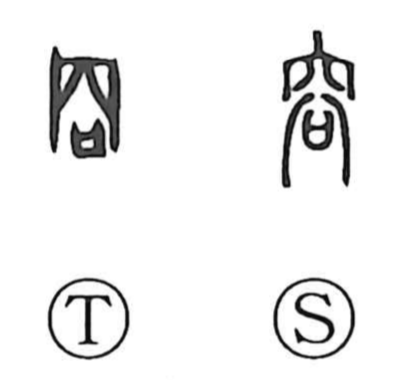

容

Kun: | On: yo
appearance ・ form ・ figure ・ to admit ・ to permit
Explanation
A compound graph formed from the roof radical and the element 谷 read yō. The roof depicts the covering of a mausoleum where ancestral spirits are revered. This 谷 is not the ‘valley’ koku, but the yō seen in 俗, 浴, and 欲: an image of divine pneuma appearing above a sai, a covenant vessel into which written prayers to the gods are placed. In the mausoleum one offers this vessel and prays; 容 thus portrays the dim manifestation—the figure and form—of a deity hovering over it. From this vision arise the senses of appearance and state, and by extension the ideas of admitting and permitting—of letting something in.